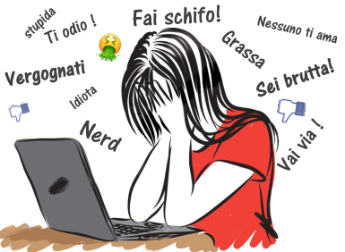

Il cyber bullismo è la manifestazione in Rete di un fenomeno più ampio e meglio conosciuto come bullismo. Quest'ultimo è caratterizzato da azioni violente e intimidatorie esercitate da un bullo, o un gruppo di bulli, su una vittima. Le azioni possono r iguardare molestie verbali, aggressioni fisiche, persecuzioni, generalmente attuate in ambiente scolastico. Oggi la tecnol-imjogia consente ai bulli di infiltrarsi nelle case delle vittime, di materializzarsi in ogni momento della loro vita, perseguitandole con messaggi, immagini, video offensivi inviati tramite smartphone o pubblicati sui siti web tramite Internet. Il bullismo diventa quindi cyberbullismo. Il cyberbullismo definisce un insieme di azioni aggressive e intenzionali, di una singola persona o di un gruppo, realizzate mediante strumenti elettronici (sms, mms, foto, video, email, chatt rooms, istant messaging, siti web, telefonate), il cui obiettivo e quello di provocare danni ad un coetaneo incapace di difendersi. Il cyberbullismo possiede una serie di caratteristiche specifiche: la pervasività (il cyberbullo è sempre presente sulle varie tecnologie usate), l’anonimato, la volontarietà dell’aggressione (non sempre gli effetti negativi sono provocati da un’azione mirata, in quanto non potendo osservare le reazioni della vittima, si commettono atti persecutori non comprendendo che ci si è spinti troppo oltre) e l’ampiezza di portata (i messaggi e i materiali inviati sono trasmessi, ritrasmessi e amplificati oltre la cerchia dei conoscenti).Per delineare un panorama più chiaro di questo fenomeno vediamo, inizialmente, quanti tipi di bullismo esistono sul web (Smith et al., 2006). Si può parlare di:
Flaming: si tratta di messaggi online violenti e volgari che si trovano spesso sui forum, sui gruppi online che servono per aizzare, provocare e ovviamente umiliare i malcapitati.
Impersonation: è conosciuto come lo scambio di persona. In pratica si mandano messaggi fingendosi altro da sè stessi per mandare messaggi online o pubblicarli ingannando la persona.
Trickery: Si cerca di ottenere la fiducia di un ragazzo o una ragazza per poi fare uno scherzo crudele.
Cyberstalking: come lo stalking, qui si parla di m

video
VITTIME LGBTQ
VITTIME ETEROSSESUALI
28,1%
14,1%